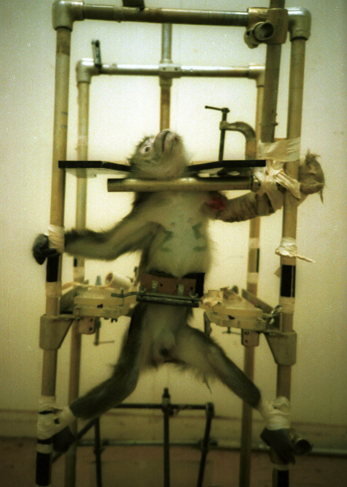
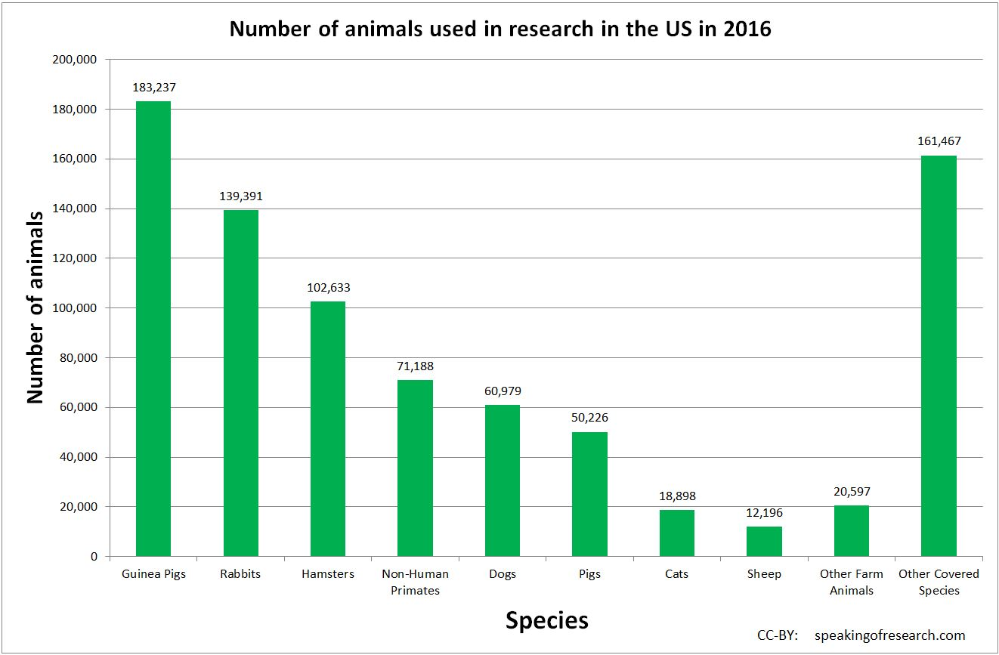
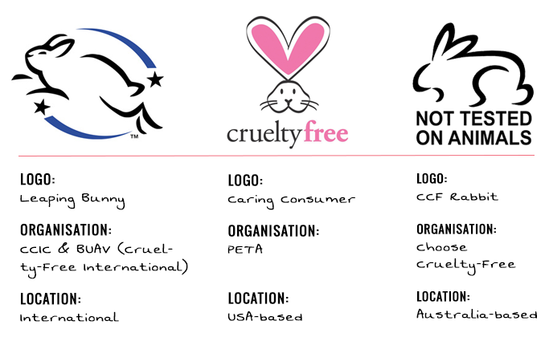

LOOKING FOR THE BUNNY!
Hello, everyone meet Lola!

"Monkey" by samuelrodgers752 is licensed under a Creative Commons Attribution 2.0
Lola was a happy monkey until she was used by a facility to test make up products. Did you know, that every year 105,000 primates just like Lola are imprisoned in American laboratories where trhey are abused and invoveled in painful and terrifying experiments that often result in death. Babies born in such facilities are torn apart from their mothers within 3 days of birth. Millions of animals are subjected to inhumane torture just so that someone somewhere could wear some make up or put on a fancy hand cream.

"Silverspring1981" by PETA is licensed under the Creative Commons Attribution 2.0
Its not just monkeys like Lola that are being abused. In the US alone, animals such as monkeys, rabbits, cats, and even dogs are being used in labs to do research and test products such as makeup, baby products, cleaning products, cigarettes etc. Here, is a graph that shows the statistics for animals used in research in the US in 2016.

This image is licensed under a Creative Commons Attribution 2.0
There are ways to ethically create these products without harming animals or using them to test these products on. There are 3 types cruelty free brands: ones that are certified by the leaping bunny organisation, ones that are pledged to PETA, and ones that are not affiliated to any organisation. It is very important that we are able to recognize what brands are cruelty free when we are shopping for products and that is why it is crucial that we look for the bunny! The leaping bunny was formed out of eight national animal protection groups banding together to form the Coalition for Consumer Information on Cosmetics (CCIC) The Leaping Bunny logo is internationally recognized and it is a logo featuring a bunny. Whenever you see this logo on any item it means that it was created ethically and is cruelty free.

Here is a list of some major brands that still test on animals and are not cruelty free.
- L'oreal
- Clorox
- Johnsons and Johnsons
- Proctor and Gamble
- Estee Lauder
Here is a list of major companies that are cruelty free and very accessible.
- Aesop
- Live Clean
- Essence
- China Glaze
- Glossier
- Wet n Wild
There are some websites that have various articles that will help you navigate your way through buying and using ethical products.